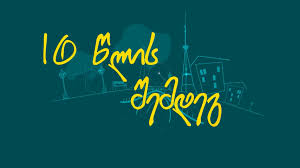
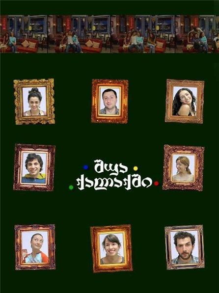

ShuaQalaqshiFan
Welcome to our website, where you can read an intersting facts about one of the most known sitcom in the country of Georgia, named "In the middle of the city"(შუა ქალაქში). In the Middle of the City is a Georgian sitcom about a group of friends as they live in Tbilisi's neighborhood of Vake. The show is produced by The Night Show Studio. It was originally broadcast from 2007 to 2010. The show premiered on September 23, 2007 and completed its first season on July 13, 2008. Second season has been confirmed by Imedi TV. It is filmed in Tbilisi, Georgia. The plot follows the life of one peculiar family, with friends, in Tbilisi, each of which has a risible, odd life-style with many surprises. As for the frivolous family, with singular friends and neighbouring gossip girls, they lead a normal life. It also has a continuation of 10 Years Later.




The series was filmed in the sitcom format. The Night Show Studio, as in the case of other programs (“Night Show”, “Saturday Show”, “The Candidate” and others), borrowed this format from American analogues (for example, “Friends”). The Night Show Studio staff traveled to America in the summer of 2007, met with producers and screenwriters of popular sitcoms, and attended the recording process. In addition, they underwent training at “Warner Brothers Studios” and obtained the right to do this format. The show’s style and humor became the reason for its mass popularity. The first series of the series aired on September 23, 2007. The series aired every Saturday and Sunday at 10 pm on the Imedi channel.
| Performers |
Actor/Actress |
Seasons |
| Otar Tatishvili |
Irakli Chxeidze |
1-10 |
| Jaba Kiladze |
Sandro Maxaradze |
1-8 |
In this table is given the info about some actors from series.